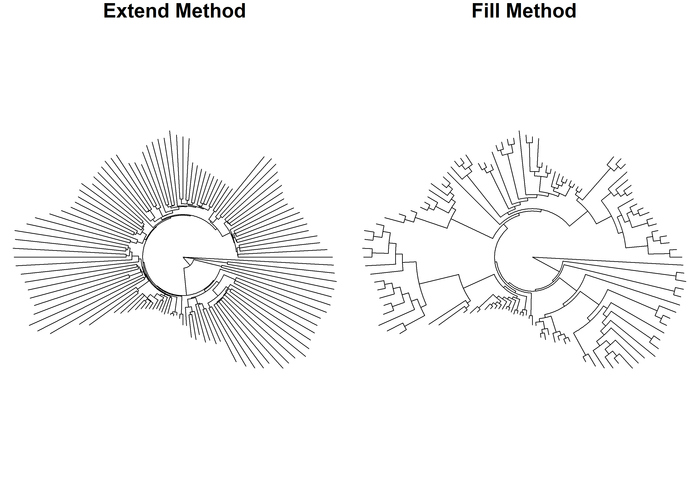

phyloshapeR is a package to plot phylogenies in a custom shape
Installing labeleR
To install phyloshapeR from GitHub, you might need to install the devtools package. Once you have it, you just have to specify the repository and install!
# install.packages("devtools")
devtools::install_github("iramosgutierrez/phyloshapeR")If you want to clone the repository, you can find the code here.
1. Getting started
library("phyloshapeR")1.1 The phyloshapeR package
The aim of this package is to create visual plots of phylogenies, but never to create phylogenetic trees to be used for analyses. The workflow of this package is to use an existing phylogenetic tree (or create a new one) and modify its branch lengths to match a particular shape. Originally it was designed to be used with administrative boundaries. It must be noted that depending on the contour of the desired shape, results may vary (more or less rounded shapes work better than long ones). However, several predefined shapes (as diamond, heart, star or polygons) have been added too.
1.2 Preparing the data
The only files we need to use pyloshapeR are a shapefile (spatial vector) and a phylogenetic tree. However, both of them can be loaded or created internally.
Loading an own shapefile
Shapefiles are spatial vectors that must be loaded using the terra package.
In case we lack a shapefile including the geometries we want to use, we can use a predefined map loaded in phyloshapeR. However, we must do some post-processing to select the corect geomentries, as unique countries have several polygons.
shape <- terra::vect(phyloshapeR::world)
shape <- shape[shape$name=="Australia",] #We select all the territories from Australia's country
shape <- get_territory(shape, order = 1) #we select the biggest one (mainland Australia)In case you don’t want to shape your phylogeny using a country border, but want to use a predefined form, you can alternatively use function getshape (see below).
Loading an own phylogeny
In case you want to use a specific tree to be plotted, it must be loaded using ape's package read.tree function.
Keep in mind that this tree, if has too many tips may be pruned afterwords (i.e. some of the tips may be randomly eliminated). In case you want to use the complete tree, you will have to specify in the function afterwords to use the same tips for the shape as your tree has!
2. phyloshapeR functions
getshape() function
This function is needed only if you don’t have an own shapefile to be used and want to plot a phylogeny using some predefined forms. The options to be selected (i.e. the type argument) are diamond, star, heart, or a polygon of the desired number of sides (to be specified in the sides argument). Additionally, you can rotate the output shape using the rotate argument, specifying a number of degrees to rotate in a counter-clockwise direction.
heart <- getshape(type="heart")
hexagon <- getshape(type="polygon", sides = 6)
square <- getshape(type="polygon", sides = 4)
rot.square <- getshape(type="polygon", sides = 4, rotate = 45)
par(mfrow=c(2,2))
terra::plot(heart, main="Heart")
terra::plot(hexagon, main="Hexagon")
terra::plot(square, main="Square")
terra::plot(rot.square, main="Rotated Square")In case you alternatively want to use a country border to shape your phylogeny, you might use the world map included in phyloshapeR. However, as most have more than one geometry (due to islands or other administrative separations), we have to select which geometry we want to use. This can be done manually, selecting the geometry we want to use one by one, or selecting the one with the biggest expanse (which is generally in the one of interest) using the accessory function get_territory.
world <- terra::vect(phyloshapeR::world)
australia <- world[world$name=="Australia",] #We select all the territories from Australia's country
mainland.aus <- get_territory(australia, 1) #we select the biggest one (mainland Australia)
tasmania <- get_territory(australia, 2) #we select the second biggest one (Tasmania)
terra::plot(australia, col="red")
terra::plot(mainland.aus, col="green", add=T)
terra::plot(tasmania, col="blue", add=T)
legend("topright", legend=c("Mainland Australia", "Tasmania", "Not Selected"), fill=c("green", "blue", "red")) Keep in mind that depending on the selected shape the results may vary. Using very linear shapes (as the border of Chile, for example), or borders with bends and turns (as the case of Great Britain) may result in strange outputs.
Keep in mind that depending on the selected shape the results may vary. Using very linear shapes (as the border of Chile, for example), or borders with bends and turns (as the case of Great Britain) may result in strange outputs.
phyloshape() function
Once we have our shape loaded or created, and optionally the phylogenetic tree to use, we have to calculate distances of the branches to plot afterwards. In case the tree is not specified, a random phylogen will be created, using the number of tips specified in parameter ntips. If a tree is specified, and has more tips than the specified, some of them will be randomply pruned to match the specified argument value.
There are different approaches to the calculation of branch lengths, which are specified in parameter method. Method “extend” will use the internal branch length values, and extend the length just in the branches over the tips. Contrarily, method “fill” (default) will re-calculate internal branch lengths. To do so, it sets the splitting point within nodes at a depth specified in argument depth. Values near to 1 will result in very long internal branches, splitting nnear the tips, while values near to 0 ill split near the root.
ext.tree <- phyloshape(mainland.aus, exampletree, ntips =120, method = "extend")
fill.tree <- phyloshape(mainland.aus, exampletree, ntips=120, method = "fill")
par(mfrow=c(1,2), mar=c(1,0,1,0))
ape::plot.phylo(ext.tree, type = "f", show.tip.label = F, edge.width = 0.75,main="Extend Method")
ape::plot.phylo(fill.tree, type = "f", show.tip.label = F, edge.width = 0.75,main="Fill Method")
depth.025.tree <- phyloshape(mainland.aus, exampletree, ntips=120, depth.k = 0.25)
depth.099.tree <- phyloshape(mainland.aus, exampletree, ntips=120, depth.k = 0.99)
par(mfrow=c(1,2), mar=c(1,0,1,0))
ape::plot.phylo(depth.025.tree, type = "f", show.tip.label = F, edge.width = 0.75,main="depth.k = 0.25")
ape::plot.phylo(depth.099.tree, type = "f", show.tip.label = F, edge.width = 0.75, main="depth.k = 0.99")Ultimately, we can select the coordinates where we want to set the root of our tree, specifying a Spatial Vector point in the point argument, using the auxiliar coords_to_point() function. It must be noted that the specified point must be included within the shape extent. The default value to use (if point is not specified) will be the centroid of the geometry.
point1 <- coords_to_point(x=125, y= -22)
point2 <- coords_to_point(x=145, y= -28)
centroid.tree <- phyloshape(mainland.aus, exampletree, ntips=120)
point1.tree <- phyloshape(mainland.aus, exampletree, ntips=120, point = point1)
point2.tree <- phyloshape(mainland.aus, exampletree, ntips=120, point = point2)
par(mfrow=c(1,3), mar=c(10,0,10,0))
ape::plot.phylo(point1.tree, type = "f", show.tip.label = F, edge.width = 0.75, main="Custom west point")
ape::plot.phylo(centroid.tree, type = "f", show.tip.label = F, edge.width = 0.75, main="Centroid")
ape::plot.phylo(point2.tree, type = "f", show.tip.label = F, edge.width = 0.75, main="Custom east point")phylomap() function
The last function is a custom plot to be used with the results of phyloshape() function. However, it is only a simplification of some parameters of ape's plot.phylo() possibilities, proposed here. In case you are familiar with phylogeny plotting, you may prefer to custmize the parameters to your preferred options.
phylomap() has a set of editable parameters (offset, cex, pch, tip.label.col) that will affect to the plotting of the tips as labels (namely the distance from the tree, the character size, the character used to plot them, and the colour). Additional parameters can be passed through plot.phylo() function, always with the nomenclature used therein (you can use ?ape::plot.phylo to see the possibilities!).
Citation
To cite package 'phyloshapeR' in publications use:
Ramos-Gutierrez I (2024). _phyloshapeR: plot phylogenies as maps_.
<https://github.com/iramosgutierrez/phyloshapeR>.
A BibTeX entry for LaTeX users is
@Manual{,
title = {phyloshapeR: plot phylogenies as maps},
author = {Ignacio Ramos-Gutierrez},
year = {2024},
url = {https://github.com/iramosgutierrez/phyloshapeR},
}